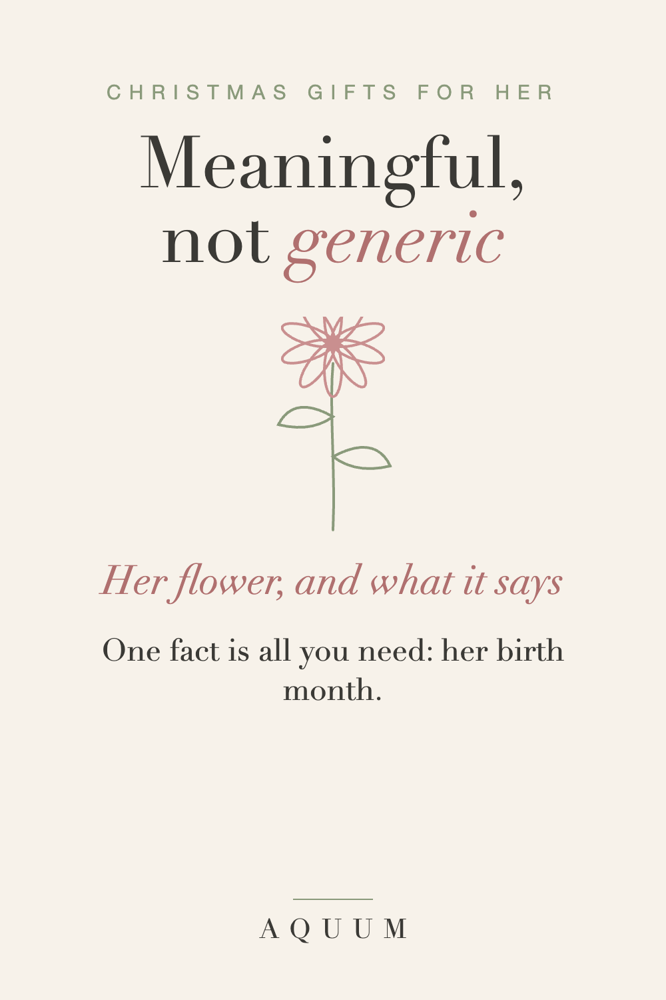

Meaningful Christmas Gifts for Her: Personal Ideas That Aren't Generic
2026-09-30
This article may contain affiliate links. How that works.

Every December the same gifts come around: the candle, the scarf, the gift card with a nice note. They're fine. They're also forgettable, and she knows you picked them in a hurry.
A meaningful gift doesn't have to cost more. It has to say something about her.
The one-fact gift
You don't need to know her taste in jewelry or her size in boots. You need one fact: her birth month. Every month has a flower, and every flower has a meaning, so a gift with her flower arrives with a message already built in.
- January · Carnation: love that doesn't give up
- April · Daisy: uncomplicated joy
- June · Rose: love in all its forms
- September · Aster: wisdom and patience
- November · Chrysanthemum: honest friendship
All twelve are in what is my birth flower.
Ideas by who she is
- For Mom: her flower, and maybe her children's flowers with it. See gifts for Mom.
- For your wife or girlfriend: her flower, or yours and hers side by side. See romantic gifts without the clichés.
- For your sister or best friend: matching gifts with each other's flowers. See gifts for best friends and sisters.
- For your mother-in-law: personal, but hard to get wrong. See gifts for your mother-in-law.
- For Grandma: the whole family in flowers. See gifts for Grandma.
Make the meaning part of the gift
The flower is half of it. The other half is the card:
"Your flower is the carnation. It means love that doesn't give up. That's you, every single year."
One line about the flower, one line about her. That's the part she'll keep.
When to order
Made-to-order gifts take about a week to be made and shipped in the US, and December mail is slow. Order by mid-December to be safe. More holiday ideas are in our Christmas gift guide.